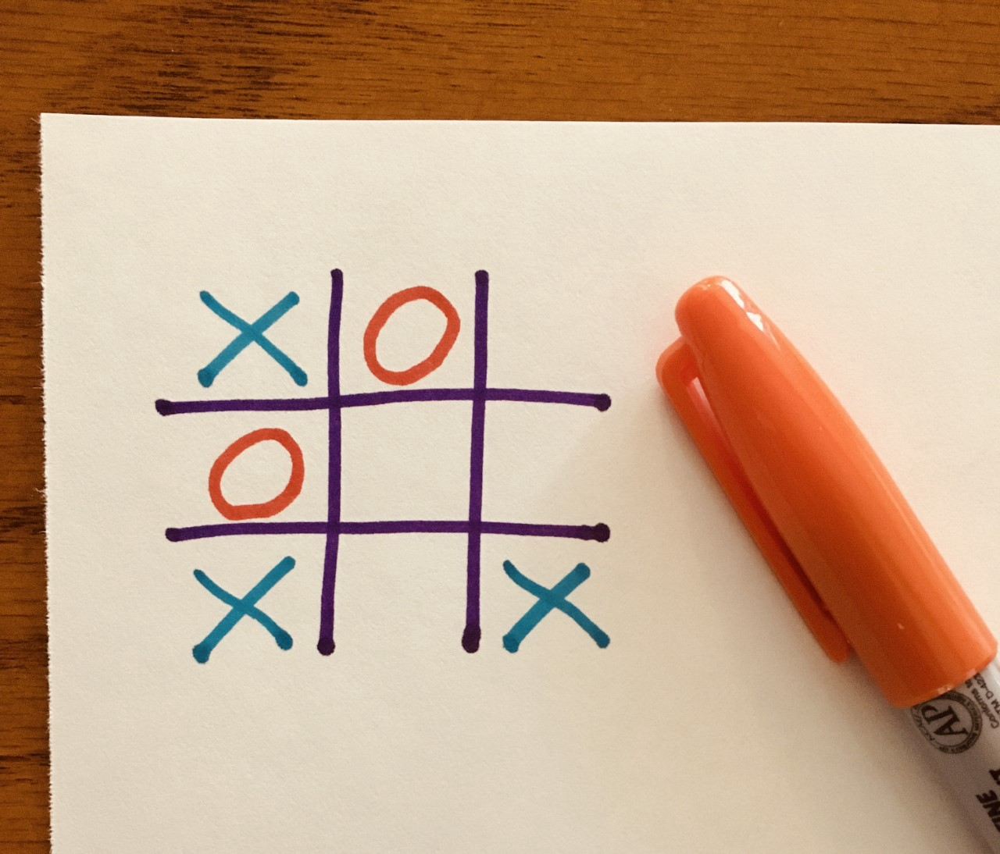

Takeaways
As you've likely seend from the strategies page, it's really difficult to win tictactoe if you're playing against an experienced player. In fact, it can be literally impossible. The way I devised the strategies for that page was by playing the impossible difficulty on the google tictactoe page (again, the link is here), and no matter what I did (and trust me, I did a lot), the game always resulted in a draw or a loss on my part.
(note: this is all played on a 3x3 grid. perhaps tictactoe can be winnable on different sized grids or more than two players, who knows)
Average Game of Tictactoe
There are some moves played and eventually there will be two symbols in a row. A player will block those symbols, and this will repeat until the board is filled results in a draw. This is an attribute shared with other famous games, such as chess. Perfect games of both chess and tictactoe both result in draws, with the only difference between the two games being that it's easier to play perfectly in tictactoe.
